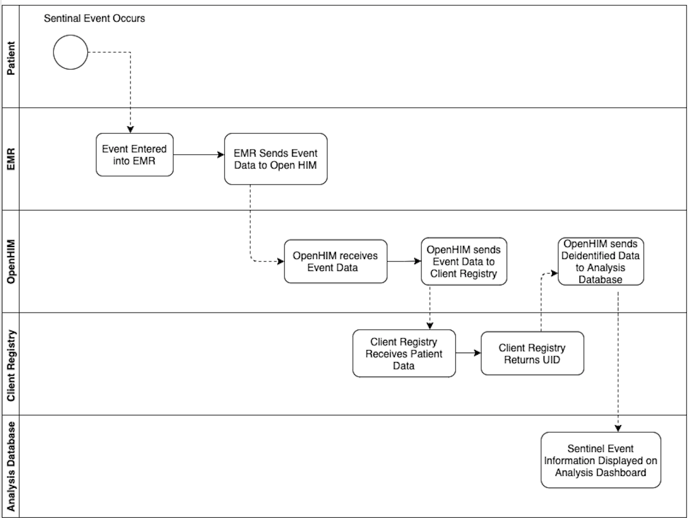

Use Cases
At its core, OpenCR provides a unique identifier (UID) that also links to all other already matched records from submitting systems. This means that OpenCR stores an identifier from submitting systems so that it can uniquely identify according to however the submitting systems store their records, but it also produces a UID for the entire domain using the service.
Several workflows are supported out-of-the-box depending on the POS-OpenCR use case. For example:
-
A specimen is received by a laboratory. Demographic data and requesting location data is entered into the LMIS. The LMIS queries OpenCR for a UID. OpenCR provides the UID if one did not exist and stores limited patient demographic information but does not store test results. A use that this enables (but OpenCR does not provide) is the ability to track persons lab results over time.
-
A patient is registered at a clinic. The clinician recommends a viral load test. The specimen is sent for processing to the laboratory. OpenCR receives the UID and specimen and returns a diagnostic result that is then stored in the EMR.
-
A patient is registered at a clinic and has been assigned a UID. In the course of their clinical encounter, a sentinel event occurs, triggering the EMR to send limited clinical information to the Health Information Exchange (HIE). The HIE sends the data to a data analysis warehouse for population analysis and case-based surveillance.
Warning
It is important to note that in the above workflows OpenCR does not store or provide clinical data. Such processes are external to OpenCR and must be separately created, governed, and enabled.
Viral Load Test Request (Paper)

A plasma specimen is received by a laboratory for HIV viral load testing. Demographic data and requesting location data is entered into the LMIS. The LMIS queries OpenCR for a UID. OpenCR provides the UID if one did not exist and stores limited patient demographic information but does not store test results. A use that this enables (but OpenCR does not provide) is the ability to track persons lab results over time.
Viral Load Test Request (EMR)

A patient is registered at a clinic. The clinician recommends an HIV viral load test. The plasma specimen is sent for processing to the laboratory. OpenCR receives the UID and specimen and returns a diagnostic result that is then stored in the EMR.
Case-Based Surveillance

A patient is registered at a clinic and has been assigned a UID. In the course of their clinical encounter, a sentinel event occurs, triggering the EMR to send limited clinical information to the Health Information Exchange (HIE). The HIE sends the data to a data analysis warehouse for population analysis and case-based surveillance.